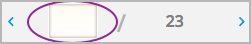

想要为您的课程添加图片或文件，您需要先通过Studio将文件上传到您的课程，再将文件地址添加到课程内容中。 您也可以使用从教师面板发出的大容量邮件中的文件。
上传的文件大小不能超过 50 MB。
在将文件添加到您的课程之前，我们推荐您使用压缩工具将PDF文件或图片文件进行压缩。 如果您必须使用压缩后仍超出 50 MB的文件，请联系您的edX项目经理。
如果您需要和学生分享视频或音频文件等大尺寸文件，请用YouTube或者其他网站存储这些文件。 请勿将这些文件通过“文件与上传”页面上传到您的课程里。如果edX合作伙伴需要储存大尺寸文件，请联系您的edX项目经理。
您将在Studio中的 文件与上传 页面中上传文件。
Note
请确保您拥有所上传文件或图片的版权许可，以及标明正确的引用来源。
如何上传文件：
在您的本地计算机上创建文件
Note
由于文件名属于URL的一部分，学生在打开URL时也能看见文件名。因此不要将文件名设置为“答案.pdf”等。
单击 内容 菜单，选择 文件与上传
单击 上传新文件
在跳出的对话框中，单击 选择文件
在 打开 对话框中，选择一个或多个上传的文件，单击 打开
Note
如果上传的文件与已有课程文件重名，则原文件会在无警告的情况下被覆盖。
想要继续添加文件，单击 继续添加，重复以上步骤
单击右上角的 X 关闭对话框
关闭对话框时，新文件会出现在 文件与上传 页面。
在 文件与上传 页面，每个文件都有 Studio URL 和 web URL 。
如果您需要进行以下操作，请使用web URL： 通过大容量邮件添加文件或图片... 提供外部文件或图片的链接。
使用 Studio URL 可将组件、补充资料和讲义链接至文件、图片。
更多细节请参考 在HTML组件中添加图像. 您无法使用 web URL 来引用您课程内部的文件和图片。
使用 Web URL 来
Note
如果您不想让课堂以外的人查看文件，您可以锁定文件。 锁定文件以后，web URL只允许注册本课程的学生查看。 更多信息请参阅： 锁定文件.
双击选中 URL 栏中的值进行复制。
在 文件与上传 页面中，您可以按照任何蓝色标题值排列文件。例如，点击 文件名 列可按照文件名排序文件。
两种排序方式均可在正序与倒序形式中切换，单击列标题即可。
当前排序顺序显示在文件列表顶部，排序顺序以下划线标出。
您可以选择可见文件类型以过滤文件列表。列表将保持当前的排列方式。
| 类型 | 文件类型包括 |
| 图片 | .gif、 .ico、 .jpg、 .jpeg、 .png、 .tif 或 .tiff |
| 文档 | .pdf、 .txt、 Microsoft Office 和 Open Office 文档，演示文稿或电子表格或电子表格 |
| 其他 | 其他类型如 .html、 .js 或 .sjson |
通过类型筛选列表或文件：
更新后的列表只包含您选择的文件类型，列名也相应变化。
点击 类型 下拉列表中的 查看全部 可以重新设置条件以及查看所有类型的文件。
文件与上传 每页最多显示50个文件，如果您的课程文件数量超过50个，其余的文件将显示在其他页面。
页面内容最上方会显示当前页面停留在哪个文件页以及文件总数。
您可通过以下两种方法浏览文件页：
点击文件列表最上方和最下方的 < 和 > 按钮在上一页与下一页之前切换
在页面底部点击页码跳转至某页 在输入框中输入页码可直接跳转至该页面。
系统默认，即使是课堂外的人，只要知道文件的URL就可以下载您上传的文件， 如果您不想让他们访问您的文件，请点击 锁定 按钮。
{kind=link}